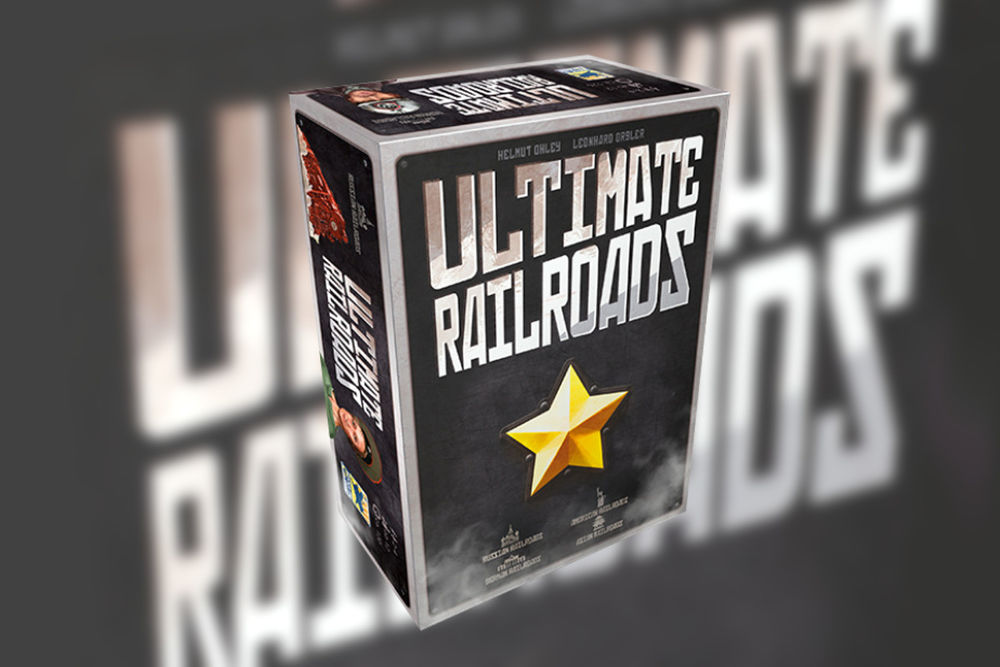

Recent News
Behold, the Ultimate Railroads!
Almost 8 years after the publication of Russian Railroads, Ultimate Railroads will be published in 2021.
The expert Game Russian Railroads takes us back to the late Tsardom, where we build our tracks through Siberia, to Saint Petersburg or Kiev. At the same time, however we have to bring forth the industrialization and improve our engineers’ skills.
Ultimate Railroads allows an all-encompassing access to this worker placement game.
The base game, Russian Railroads, won the Deutscher Spiele Preis of 2014.
Also fans will get their money’s worth through the considerable content, which includes all expansions (also mini- and promo-expansions).
The Big Box includes:
Russian Railroads
Expansions:
German Railroads, American Railroads, Asian Railroads
Mini-Expansions:
New Engineers (DSP), Juri Dreigleisky, Manufactory Train, Solo-variant
Designer: Helmut Ohley & Leonhard Orgler
Illustration: Martin Hoffmann & Claus Stephan